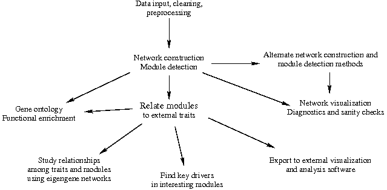
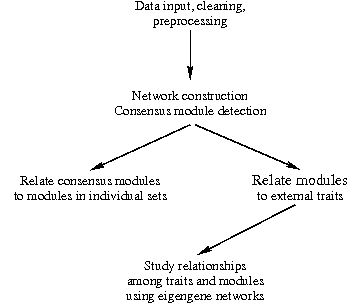

Tutorials for the WGCNA package
Peter Langfelder and Steve Horvath
Dept. of Human Genetics, UC Los Ageles (PL, SH),
Dept. of Biostatistics, UC Los Ageles (SH)
Peter (dot) Langfelder (at) gmail (dot) com,
SHorvath (at) mednet (dot) ucla (dot) edu
This page provides a set of tutorials for the WGCNA package. We illustrate various aspects of data input,
network construction, module detection, relating modules and genes to external information etc.
Before going through the tutorials, please make sure you have installed (the newest version of) the
WGCNA package and all packages it
depends on. Please refer to the main WGCNA page and the installation instructions for details.
We provide three introductory tutorials (I - III), each split into smaller sections for easier reading,
and we link to more advanced tutorials that describe research analyses in which we used WGCNA.
-
The first
tutorial guides the reader through an analysis of a single empirical gene expression data set. Results
obtained in this tutorial are described in the example analysis section of the main paper. We highly
recommend that the reader work through this tutorial before moving on to the second tutorial.
- The second
tutorial introduces consensus module analysis that closely parallels the single data set analysis
presented in Tutorial I, but contains the extra ingredient of analyzing the consensus of two related but
different sets.
- Tutorial III illustrates data simulation, provides a different look at preprocessing and
network construction, and adds a comparison of several different module detection techniques. Finally, it
illustrates a network-based gene screening technique and compares it to a standard, correlation-based
gene screening.
- Jeremy Miller's tutorial that illustrates the meta analysis of multiple data sets, including the use of
the funtions
collapseRows and userListEnrichment as well as interfacing with the
VisANT software.
Click here to visit his
page.
The tutorials on this page were last updated on February 13, 2016.
This changelog
provides a summary of the updates.
Please note that the presented tutorials are compatible with WGCNA
version 1.13 (and higher) and dynamicTreeCut 1.20 (and higher), the versions current as of August 19 2011.
The tutorials (at least certain sections) will not
run with older versions of the two packages; please update if necessary. To get maximum performance, please
use the newest version of the WGCNA package.
WGCNA background and glossary
In addition to the tutorials, we provide a short text containing some background information, an overview
figure, and a short glossary of network analysis terms and concepts. We highly recommend this short text
as an introduction and reference.
I. Network analysis of liver expression data from female mice: finding modules
related to body weight
Data description and download
This tutorial guides the reader through the analysis of an empirical data set. The data are gene
expression measurements from livers of female mouse of a specific F2 intercross. For a detailed
description of the data and the biological implications we refer the reader to Ghazalpour et al (2006),
Integrating Genetics and Network Analysis to
Characterize Genes Related to Mouse Weight (link to paper;
link to additional
information). We note that the data set contains 3600 measured expression profiles. These were
filtered from the original over 20,000 profiles by keeping only the most variant and most connected
probes. In addition to the expression data, several physiological quantitative traits were measured for
the mice.
Please download the
following
and unzip them in a folder of your choice, preferably a new folder created specifically for this
tutorial. Note the name of the folder;
when you start an R session, the first command should be to change the R working directory into this
folder.
R Tutorial
The flowchart of the tutorial is shown below.

Individual sections can be viewed in PDF format by clicking on the links below. Plain text R code from each
section is also available by clicking on the corresponding R script link.
For first-time users we recommend starting at the top of the list and working down. Each section of the
tutorial saves results on disk and the results needed as input for the subsequent sections can be loaded
from disk, so repeated execution of any of the sections does not require re-working previous sections again.
- Data input and cleaning: PDF document,
R script
- Network construction and module detection
- Automatic, one-step network construction and module detection:
PDF document,
R script
- Step-by-step network construction and
module detection: PDF document,
R script
- Dealing with large datasets: block-wise network
construction and module detection: PDF document,
R script
- Relating modules to external clinical traits and
identifying important genes: PDF document,
R script
- Interfacing network analysis with other data such as functional
annotation and gene ontology PDF document,
R script
- Network visualization using WGCNA functions: PDF
document, R script
- Export of networks to external software: PDF document,
R script
II. Consensus analysis of female and male liver expression data
Data description and download
In this tutorial we illustrate a consensus network analysis on the example of two expression data sets,
the female liver analyzed in Tutorial I, and a corresponding expression data set from livers of male mice.
The two sets are biologically very similar, but significant differences exists as well. The consensus
analysis parallels the female data analysis very closely and some sections are copied almost verbatim. We
concentrate on the parts of the analysis that illustrate the idea behind a consensus analysis, and we
leave out parts such as functional enrichment analysis for which the analysis and code would be exactly
or nearly the same.
To run the tutorials, the following two zip bundles of data sets are necessary:
Please download and unzip them in a folder of your choice,
for example in the same folder as the female data (file names in the female and consensus analyses do not
conflict). Note the name of the folder;
when you start an R session, the first command should be to change the R working directory into this
folder.
R Tutorial
The flowchart of the tutorial is shown below.

Individual sections can be viewed in PDF format by clicking on the links below. We highly recommend that
the user first works through the female expression data analysis, because it explains many of the same basic
analysis techniques on a simpler example, without the additional complications of analyzing two sets at
the same time. We recommend starting at the top working through the sections in the order they are
presented here. Each section saves its results on disk and the results needed as input for the subsequent
parts can be loaded
from disk, so repeated execution of any of the sections does not require re-working previous sections again.
- Data input and cleaning, including re-formatting the data
for consensus analysis: PDF document,
R script
- Network construction and consensus module detection
- Automatic, one-step network construction and
consensus module detection: PDF document,
R script
- Step-by-step network construction and
module detection, including scaling of Topological Overlap Matrices:
PDF document,
R script
- Dealing with large datasets: block-wise
network construction and consensus module detection, including comparing the block-wise approach to
the standard single-block method: PDF document,
R script
- Relating the consensus modules to female set-specific
modules (this section requires the results of Section 2.a of the female turorial):
PDF document,
R script
- Relating consensus module to external microarray sample
traits and exporting the results of network analysis: PDF
document,
R script
- Studying and comparing the relationships among modules
and traits between the two data sets, including the visualization of consensus eigengene networks and
the results of the differential analysis: PDF
document,
R script
III. Analysis of simulated data
In this R software tutorial we review key concepts of weighted gene co-expression network analysis
(WGCNA). The tutorial also serves as a small introduction to clustering procedures in R.
We use simulated gene expression data to evaluate different module detection methods and gene screening
approaches.
Data description and download
Although the tutorial uses simulated data, in Section 2 it also demonstrates loading of
summary, expression and trait data. Data files used for that section are generated in Section 7; however,
we also provide them here for download:
Please download and unzip them in a folder of your choice. We recommend a folder separate from the mouse
analyses above, but same folder will work as well.
Note the name of the folder;
when you start an R session, the first command should be to change the R working directory into this
folder.
R Tutorial
Individual sections of the tutorial can be viewed in PDF format by clicking on the links below. We
recommend starting at the top working through the sections in the order they are
presented here. Each section saves its results on disk and the results needed as input for the subsequent
parts can be loaded
from disk, so repeated execution of any of the sections does not require re-working previous sections
again.
- Simulation of expression and trait data: PDF document,
R script
- Loading of expression data, an alternative to data simulation, provided to
illustrate data loading of real data:
PDF document, R script
- Basic data preprocessing illustrates
rudimentary techniques for handling missing data and removing outliers:
PDF document,
R script
- Standard gene screening illustrates gene selection
based on Pearson correlation and shows that the results are not satisfactory:
PDF document,
R script
- Construction of a weighted gene co-expression
network and network modules
illustrated step-by-step; includes a discussion of alternate clustering techniques:
PDF document,
R script
- Relating modules and module eigengenes to external
data illustrates methods for relating modules to external microarray sample traits:
PDF document,
R script
- Module membership, intramodular connectivity, and screening
for intramodular hub genes illustrates using the intramodular connectivity to define measures of
module membership and to screen for genes based on network information:
PDF document,
R script
- Visualization of gene networks: PDF document,
R script
IV. Meta-analysis of several data sets
Jeremy Miller's tutorial illustrates the meta analysis of multiple data sets, including the use of
the funtions collapseRows and userListEnrichment as well as interfacing with the
VisANT software.
Click here to visit his
page.